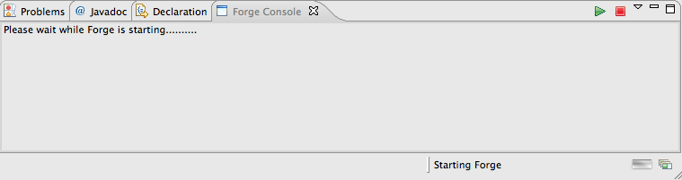
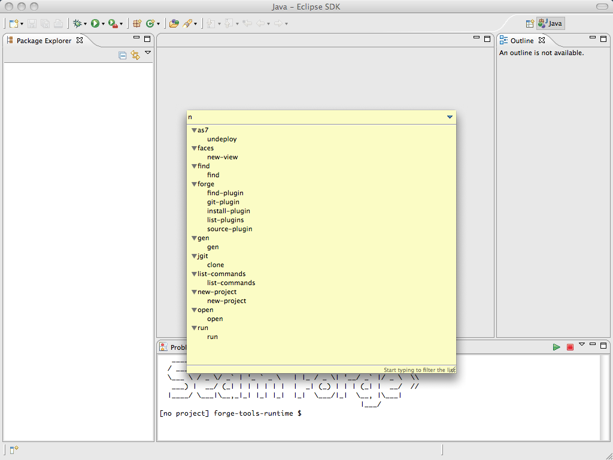

General
|
| New Embedded Forge Runtime |
The embedded bundled runtime is now the 1.0.0.Beta1 release of
Forge. The 1.0.0.Beta1 is also now the minimum requirement for any external Forge
runtime since we are now integrating with newly provided API in
Forge for better integration.
|
|
| Plugin Structure Change |
The Forge Tools now consists of four plugins:
- org.jboss.tools.forge.core : contains all the non-ui related classes such
as the Forge runtime launcher and the runtime preferences
- org.jboss.tools.forge.ui : contains all the ui related classes such as the
Forge console view and the preference pages
- org.jboss.tools.forge.runtime : contains the default embedded runtime; for 3.3.0.M3 this is the
1.0.0.Beta1 release of Forge
- org.jboss.tools.forge.runtime.ext : contains an additional module with extra classes that is added
to the module path when the Forge runtime starts up; these classes enable the communitation between
the Forge runtime and the tools
|
UI Enhancements
|
| Progress Monitor |
When starting the Forge runtime a progress monitor and a
startup pane indicate the startup status to let you know Forge is working.

|
|
| Command Quick Access |
There is now a keyboard shortcut that brings up a pop-up with a list of commands that can be
applied in the current context. By default this command is 'Ctrl+4' (or 'Cmd+4' on OS X). Typing in the
text box at the top of the pop-up filters the list of commands to contain only those matching the typed
String. Double-clicking one of the commands results in the command
being inserted in the Forge Console, in future versions we will
expand on this UI for even smoother integration/access to Forge.

|
|